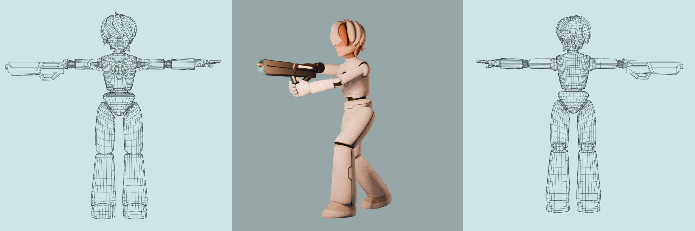
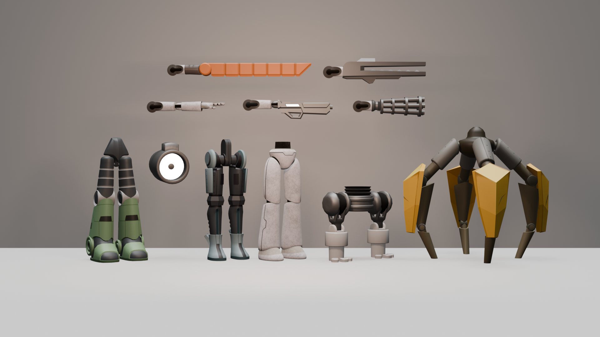
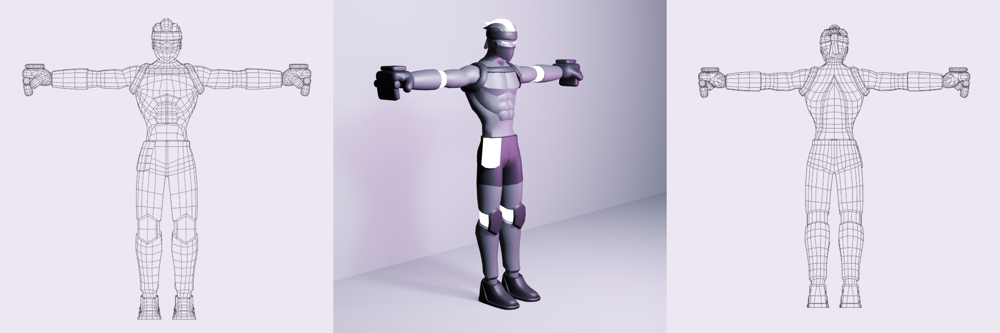
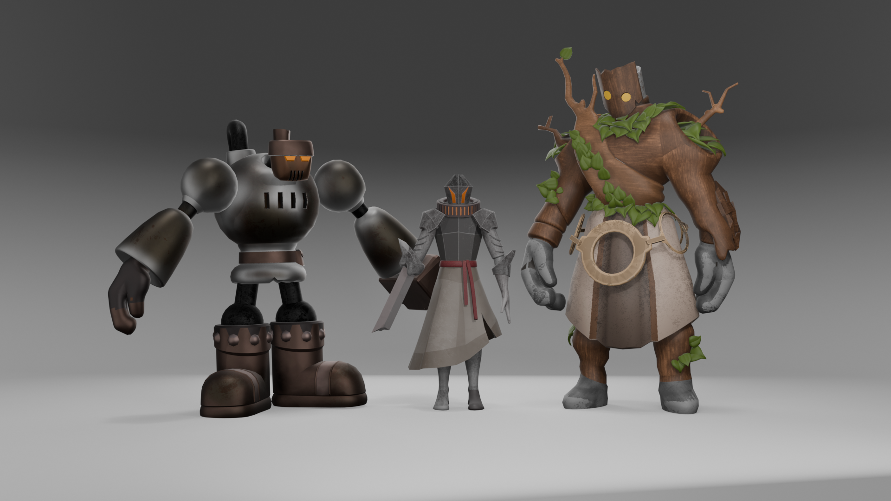
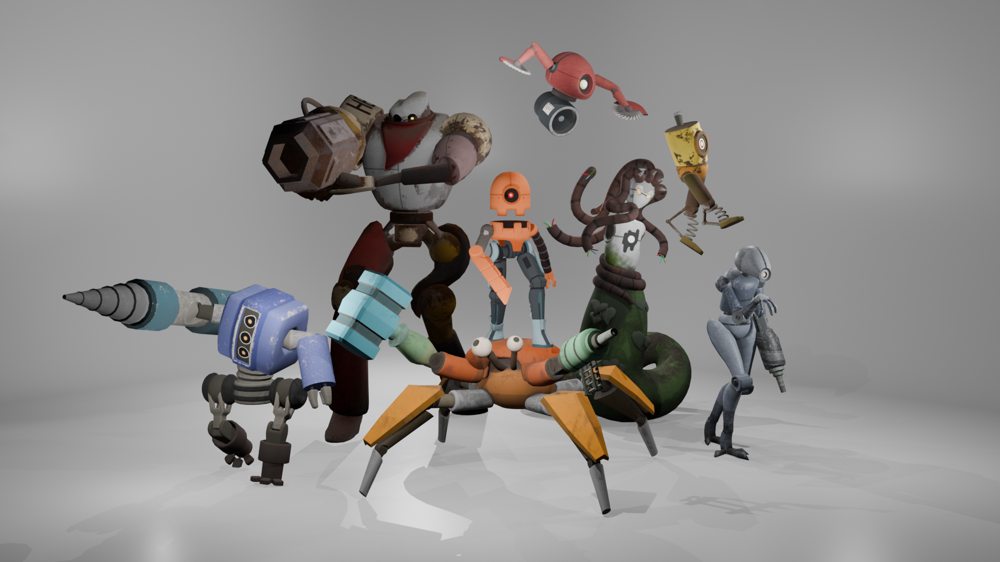

Autumn Ryan | 3D Art
Home ContactRe:Silica
Alloy: Base Character
Alloy is the player character in Re:Silica. This model is the starting build, but its limbs can be swapped with parts from defeated enemies throughout the game. Texture by Madison Joung.

Interchangeable Parts
Alloy can swap its own parts with parts scavenged from its enemies. Textures by Madison Joung.

Flux
Flux, a cocky melee fighter who enjoys champion status in Re:Silica's only city, is the first boss developed for the game.

Encounter Characters
These characters offer you bonuses and perks!

Enemies
From swarming drones to massive bosses. Textures by Madison Joung.
